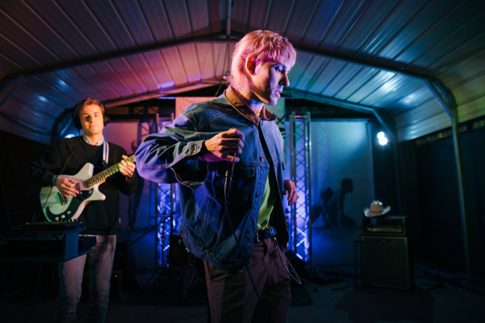

<html>
<head>
    <body style="background-color: black"></body>
    

    
    
    
    
    
     <div class="top-right"> 
    
    
    
    
    
    <meta name="viewport" content="width=device-width, initial-scale=1">
<style>
.container {
  position: relative;
  text-align: center;
  color: white;
}

.bottom-left {
  position: absolute;
  bottom: 8px;
  left: 16px;
}

.top-left {
  position: absolute;
  top: 8px;
  left: 16px;
}

.top-right {
  position: absolute;
  top: 8px;
  right: 16px;
}

.bottom-right {
  position: absolute;
  bottom: 8px;
  right: 16px;
}

.centered {
  position: absolute;
  top: 50%;
  left: 50%;
  transform: translate(-50%, -50%);
}
</style>
</head>
<body>


<div class="container">
  


      
      
      
      
      
      
      
      
      
      
  <div class="centered"><meta name="viewport" content="width=device-width, initial-scale=1">
<style>

</style>
</head>
<body>

<div class="centered">
 
    
<meta name="viewport" content="width=device-width, initial-scale=1">
<style>
.btn {
  border: 2px solid black;
  background-color: white;
  color: black;
  padding: 14px 28px;
  font-size: 16px;
  cursor: pointer;
}

/* Green */
.success {
  border-color: #4CAF50;
  color: green;
}

.success:hover {
  background-color: #4CAF50;
  color: white;
}

/* Blue */
.info {
  border-color: #2196F3;
  color: dodgerblue;
}

.info:hover {
  background: #2196F3;
  color: white;
}

/* Orange */
.warning {
  border-color: #ff9800;
  color: orange;
}

.warning:hover {
  background: #ff9800;
  color: white;
}

/* Red */
.danger {
  border-color: #f44336;
  color: red;
}

.danger:hover {
  background: #f44336;
  color: white;
}

/* Gray */
.default {
  border-color: #e7e7e7;
  color: black;
}

.default:hover {
  background: #e7e7e7;
}
</style>
</head>
<body>


    
    


        
        

    </a>

    </div>
    
    
    
    
    
    
    
    
    
    
    
    
    
    
    
    
    
    
    
    

</head>
<body>

<div class="bg"></div>
    


</body>
    
    </div>
    </body>
    
</html>
    
    

    
    <html>
<body>

    
        </body>
        <h1><a href="https://open.spotify.com/artist/1UJKiAI4Evnhh1ExDse25D?si=VzrSB_PPSFKwgwZ-Yp7e5A"> Dreamer Boy 🎶 </a></h1>
        
<p1>.</p1>
    </html>

<h2>Who's Dreamer Boy</h2>


<p2><div class="Z0LcW XcVN5d AZCkJd" data-tts="answers" data-tts-text="Zach Taylor">Zach Taylor</div></p2>


<p3><section class="post-text">
				<p>Originally from Spokane in Washington state, Dreamer Boy is the musical brainchild of 23-year-old singer and songwriter Zach Taylor.</p>
<p>After relocating to Tennessee for college at Belmont University, his debut project “Love, Nostalgia” all started by collaborating with his friends in Nashville – also known as ‘Music City’.</p>
<p>Taylor and his producer Bobby Knepper worked together on the ‘coming of age’ first album, and the rest of their team includes creative director Adam Alonzo and manager Cody Clark.</p>
<p>Following their 2018 record release, Dreamer Boy has had his own sold out headline show; opened for artists like Still Woozy, The Marías and Omar Apollo; and most recently supported &#8203;<a href="https://www.wonderlandmagazine.com/2019/10/25/clairo-interview-autumn-19-issue/" target="_blank">Wonderland cover star Clairo</a>&#8203; on her European “Immunity” tour.</p>
<p><em>We catch up with Dreamer Boy about &#8203;growing up, &#8203;making art with his friends, and his next album.</em></p>
<div class="iframe-youtube"><div class="iframe"><iframe width="100%" height="315" src="https://www.youtube.com/embed/y-Zwo2qDA3I" frameborder="0" allow="accelerometer; autoplay; encrypted-media; gyroscope; picture-in-picture" allowfullscreen="" style="height: 348.75px;"></iframe><a href="#3" class="open-media-viewer"><div class="icons icons_max"></div></a></div></div>
<p><strong>How do you think growing up in Spokane, Washington has influenced your music?</strong><br>
I definitely think it influenced early on what I was listening to and what came across my radar in terms of what kids were listening to in high school in Washington, as opposed to other parts of the country. In terms of how it affects my music now, I really like being from Washington, and I think the beauty of that place has always stuck with me.</p>
<p><strong>What was your favourite band or artist growing up?</strong><br>
I went through a bunch of cycles of music discovery. Pretty early on it was kind of just whatever my parents had in the house – and that was James Taylor. And then as I discovered music on my own, in 4th grade I remember listening to Green Day for the first time. I remember there also being Jack Johnson in my parents house – I remember listening to and singing those songs as a younger kid. But growing up, I would say James Taylor was my favourite artist overall probably.</p>
<p><strong>When did you decide that you wanted to make music?</strong><br>
I always liked going to concerts. From a younger age, before I even started making music, I always had romanticised it – like every kid would. It wasn’t until high school – there was a friend I had that I went to camp with who started making music and started rapping. His name was Nick, and he was the first kid from Spokane that I really remember making music – he really inspired me. He was a couple years older than me. He passed away at a young age a couple years ago, and I just remember he had such an impact on me in terms of showing me that you could just start making music with whatever resources you had. So, it was early on in high school that I discovered the music software Audacity, and I started recording myself. That was how I first started. I don’t even think I thought I was ever going to be able to do music full-time until pretty recently, so it’s kind of a new thing.</p>
<p><strong>How did you make that transition from making music for yourself to pursuing it full-time?</strong><br>
Intentionality is definitely what changed in my mind when it came to doing everything. Dreamer Boy is a name that I came up with because I was messing around with calling it a different name not under my own. I think that as soon as that happened, there was a world and ideas that came from being more intentional. Up until this point I was doing music without that, and then finally took all the notes and things I was observing from other artists and started putting them into practice – taking the time and working with the team on building up our ideas. For people who are really striving and really putting 100% behind something, it can really show through. That’s what we all proved to ourselves with the first album, and now it’s time to double down and do something even greater, have more fun with it, and be proud of it.</p>
<p><strong>What made you decide on the alias Dreamer Boy rather than using your own name?</strong><br>
The more I’ve sat with it and it’s been a thing, the more I’ve realised exactly why it works and that it really is my personality. We were going to try to just do ‘Dreamer’ and that was too vague because you couldn’t search for it. Somehow it ended up on ‘Dreamer Boy’. I think ‘boy’ fits me, and my sister makes fun of me because she’s like, “What if you’re still doing this when you’re like 35 or 40 and you’re Dreamer &#8203;Boy&#8203;.” But music is something that grounds us in the things that connect us all… I think me having ‘boy’ in my artist name will always ground it in this very pure and somewhat immature place.</p>
			</section></p3>


<p4> <iframe src="https://open.spotify.com/embed/artist/1UJKiAI4Evnhh1ExDse25D" width="300" height="380" frameborder="0" allowtransparency="true" allow="encrypted-media"></iframe>........<iframe src="https://open.spotify.com/embed/album/7ax3CqzjRynigDVmWKfoqn" width="300" height="380" frameborder="0" allowtransparency="true" allow="encrypted-media"></iframe>........<iframe src="https://open.spotify.com/embed/playlist/47HSdPnFTB6octt9Z0RE2C" width="300" height="380" frameborder="0" allowtransparency="true" allow="encrypted-media">........</iframe></p4>

<p5>Article from <a href="https://www.wonderlandmagazine.com/2020/01/28/new-noise-dreamer-boy/"><strong>WonderLand</strong></a>magazine</p5>

